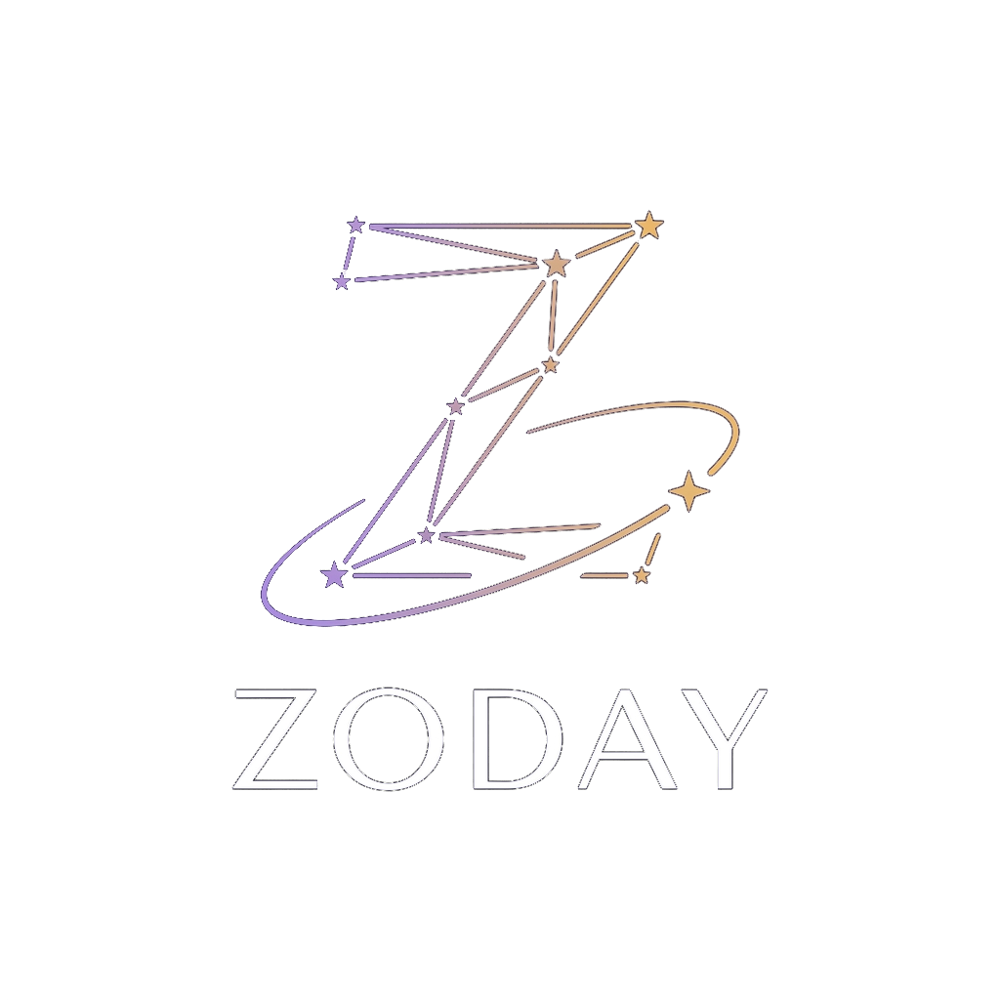

01 · TODAY
Your daily reading
A fresh headline, full reading, move of the day, lucky colour, number and hour — free in full, every day.
Every morning Zoday pulls the objects NASA tracked passing Earth that day, reads them against your birth chart, and writes you a horoscope no one else receives. Not a recycled monthly forecast — today’s sky, today’s words.

Most horoscope apps generate a year of content in advance and serve it back one day at a time. Zoday works the other way around. Every night it reads NASA’s near-Earth object feed, scores the day’s real visitors, and only then writes.
Twelve signs are written fresh in each language rather than translated, with a memory of the last seven days so the experience does not repeat itself. By the time you wake up, your reading is waiting — and it is about the day actually happening.
The astronomy is real and verifiable. The astrology is the interpretation layered over it. Zoday is explicit about the difference and never presents one as the other.
The same real sky runs through every part of the experience, from a free morning reading to questions meant only for you.
A fresh headline, full reading, move of the day, lucky colour, number and hour — free in full, every day.
Real size, speed and Moon-relative distance for NASA-tracked visitors, followed by what each may mean for your sign.
Ask about love, career, money or family and receive a reading grounded in your chart, sky, city, weather and hour.
Keep the daily readings of the people you care about close, with share-ready personal readings available through Plus.
Your birth date, plus your time and city if you know them. No account, email or password is needed to start.
Every night, real NASA data becomes twelve fresh readings written natively in your language.
Your reading waits at the hour you chose. Ask a personal question whenever you want a closer look.
Zoday pairs a daily ritual with deliberate product choices about language, trust and generosity.
Every reading is written after the sky is known, from NASA’s actual near-Earth object feed.
Each language is generated natively in its own voice, so English and Turkish both feel natural.
Astronomy has scary vocabulary. Zoday does not build readings on fear or certainty.
The complete daily horoscope and Sky tab are free forever. Plus is reserved for personal, metered readings.
Personalisation should not require surveillance. Zoday keeps the data it needs scoped to the experience you asked for.
Use Zoday without an email address, password or social login. Sign-in exists only to carry readings to another phone.
If allowed, coordinates become a city and weather condition for one reading, then are dropped.
No behavioural tracking, no advertising and no sale of personal data. App data is used only for functionality.
Data is encrypted in transit and protected by row-level security so one session cannot reach another user’s readings.
Download the information you provided as JSON or permanently delete your account from Settings.
Adding another person’s birth details shows a one-time consent notice; removing them deletes their stored information.
New users receive the first three days of Plus access free, with no card or paywall and nothing to cancel.
| Feature | Free | Zoday Plus |
|---|---|---|
| Daily reading | Included | Included |
| Today’s Sky | Included in full | Included in full |
| Personal readings | 1 a week | 5 a day |
| Loved ones | 1 person | Up to 5 people |
| Readings for loved ones | — | 1 a week each |
| Morning notification | Your reading | Your reading + loved ones |
| Price | $0 | $4.99/month or $34.99/year |
Türkiye pricing: ₺129,99/month or ₺899,99/year. Local store pricing may vary. Zoday Plus renews automatically unless cancelled at least 24 hours before the current period ends. Manage or cancel anytime in your store account settings. Payment is charged to your Apple ID at confirmation of purchase.
Both, deliberately. NASA’s feed, the measured sizes, speeds and distances, moon phase and planetary positions are real astronomy. The reading layered over them is astrology, and Zoday never pretends otherwise.
No. Zoday works from the moment you enter your birth date. Sign-in is optional and exists so you can carry readings to a new phone.
Your sun sign only needs the date. A rising sign needs the exact time and place, so both remain optional.
Yes, in full, together with the Sky tab. Personal readings are generated for one person alone, so those are the metered part of the experience.
English and Turkish at launch. Spanish, Portuguese, German, French, Indonesian and Hindi are in preparation; each language is written natively rather than machine-translated.
It is in preparation. Zoday uses a shared codebase, so Android follows the iPhone release rather than being rebuilt from scratch.
Settings → Manage subscription opens the store subscription screen directly. Zoday also sends a reminder 24 hours before a free trial converts.

Store links and real app screenshots will be added when Zoday is published.